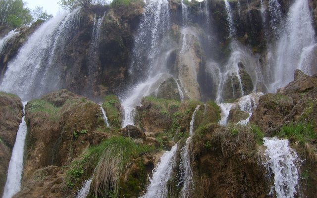
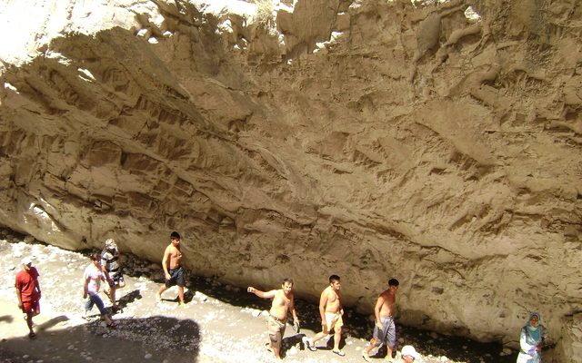

Kültür Varlıkları
探す
地図
モデルコース
文明と時代
⭐ 必見の名品
🏞 自然
年表
マイリスト
ガイドに質問
🎟 ミュージアムパス
🌐 日本語
TR
EN
中文
हिन्दी
ES
عربي
日本語
DE
Kültür Varlıkları
🏞 自然とアドベンチャー
トルコと北キプロスの滝、渓谷、湖、スキー場、ラフティングスポット、ハイキングコース。
すべて
滝 (10)
渓谷 (8)
湖 (18)
スキー場 (8)
ラフティング (5)
ハイキングコース (9)
自然景勝地 (9)
滝
エルフェレク・タトルジャの滝
スィノプ
カプズバシュの滝
カイセリ

ギルレヴィクの滝
エルズィンジャン
クルシュンルの滝自然公園
アンタルヤ
スウチトゥの滝
ブルサ
デュデンの滝
アンタルヤ
トルトゥムの滝
エルズルム
ハルビエの滝
ハタイ
マナヴガットの滝
アンタルヤ
ムラディエの滝
ヴァン
渓谷
ウルベイ渓谷自然公園
ウシャク
カランルク渓谷
エルズィンジャン
キョプリュリュ渓谷国立公園
アンタルヤ
ギョイニュク渓谷
アンタルヤ

サクルケント渓谷
ムーラ
タズ渓谷
アンタルヤ
ホルマ渓谷
カスタモヌ
ヴァッラ渓谷
カスタモヌ
湖
アバント湖自然公園
ボル
イェディギョッレル国立公園
ボル
ウズンギョル
トラブゾン
エイルディル湖
ウスパルタ
カラギョル（ボルチカ）
アルトヴィン
キョイジェイズ湖
ムーラ
ギョルジュク火口湖自然公園
ウスパルタ
サパンジャ湖
サカリヤ
サルダ湖
ブルドゥル
チュルドゥル湖
アルダハン
トゥズ湖
アクサライ
ネムルト火口湖
ビトリス
ハザル湖
エラズー
バファ湖自然公園
ムーラ
ビンギョルの浮島
ビンギョル
ベイシェヒル湖国立公園
コンヤ
メケ湖
コンヤ
ヴァン湖
ヴァン
スキー場
ウルガズ・スキー場
カスタモヌ
ウルダー・スキー場
ブルサ
エルジエス・スキー場
カイセリ
カルタルカヤ・スキー場
ボル
カルテペ・スキー場
コジャエリ
サルカムシュ・スキー場
カルス
ダヴラズ・スキー場
ウスパルタ
パランドケン・スキー場
エルズルム
ラフティング
ザマントゥ川
アダナ
ダラマン川
ムーラ
チョルフ川
アルトヴィン
フルトゥナ川
リゼ
メレン川
デュズジェ
ハイキングコース
エヴリヤ・チェレビの道
キュタヒヤ
カチカル山脈
リゼ
カリアの道
ムーラ
キレニア山岳トレイル
ギルネ（キレニア）
スルタンの道
エディルネ
ヒッタイトの道
チョルム
フリギアの道
エスキシェヒル
リュキアの道
ムーラ
聖パウロの道
アンタルヤ
自然景勝地
アラガディ・タートルビーチ
ギルネ（キレニア）
カライン洞窟
アンタルヤ
カルパス国立公園とゴールデンビーチ
イスケレ（トリコモ）
ジェヘンネマズ洞窟
ゾングルダク
スィリフケ・アストゥム洞窟
メルスィン
スィリフケ・天国と地獄の陥没穴
メルスィン
ドゥプニサ洞窟
クルクラーレリ
ベシュパルマク山脈
ギルネ（キレニア）
ヤナルタシュ（キマイラ）
アンタルヤ
🏛
探す
🗺
地図
🧭
モデルコース
♡
マイリスト